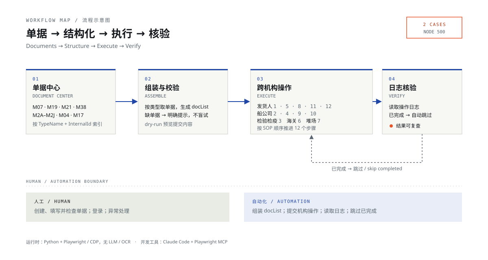

项目档案 / 2026Project dossier / 2026
线上货运代理
全流程自动化
End-to-end freight-forwarding automation
把跨机构、强单据依赖的货运代理流程封装成可重复执行的命令行工具：接管已登录浏览器，按单据元数据组装提交内容，依据操作日志跳过已完成步骤。 A repeatable CLI for a document-heavy, multi-institution freight-forwarding workflow: attach to a logged-in browser, assemble submissions from document metadata, and skip completed steps using the operation log.
返回简历Back to resume背景Context
比起具体的货代业务，这个项目更关注流程本身的逻辑：把一项工作拆解、抽象成可复用的步骤与判断，再用自动化去执行。 Beyond the specifics of freight forwarding, the project focuses on the logic of the process: breaking a piece of work into reusable steps and decisions, then executing them with automation.
具体场景是 SimForwarder 货运代理实训系统。一笔出口海运 CY 直单需要依次经过发货人、船公司、检验检疫、海关和集装箱堆场，单据类型多、依赖强、顺序严格。 The concrete setting is SimForwarder, a freight-forwarding training system. A single export sea-freight CY direct case moves through a sender, carrier, inspection and quarantine, customs, and a container yard—with many document types, strong dependencies, and a strict order.
问题Problem
- 单据类型多，不同步骤依赖不同单据组合。
- 跨机构顺序严格；漏单或提前操作会产生失败记录。
- 重复点击和反馈分散，难以确认某一步是否真的完成。
- 单据内容仍需人工填写，自动化必须明确边界。
- Many document types; each step depends on a different combination.
- A strict cross-institution order; missing documents or premature actions create failure records.
- Repeated clicks and scattered feedback make it hard to confirm whether a step is really complete.
- Documents still need manual entry, so the automation must respect a clear boundary.
方案Approach
- 接管已登录浏览器：通过 Playwright 的 CDP 连接已手动登录的 Edge，不保存账号密码。
- 文档元数据驱动：按 TypeName 与 InternalId 建立单据索引，按步骤需要的类型组装 docList；缺少单据时给出明确提示。
- CLI 封装：check、docs、scenes、do、step、log、status，把 12 步出口流程变成可重复执行的命令。
- 幂等与核验：执行前读取操作日志，已完成步骤自动跳过；dry-run 只预览不提交。
- 人工与自动化边界：程序只提交机构操作，不修改页面上的单据内容。
- Attach to a logged-in browser: Playwright connects to a manually logged-in Edge over CDP; no credentials are stored.
- Metadata-driven documents: index documents by TypeName and InternalId, assemble the docList from the types each step needs, and fail with a clear message when something is missing.
- CLI wrapper: check, docs, scenes, do, step, log, and status turn the 12-step export flow into repeatable commands.
- Idempotency and verification: read the operation log before acting, skip completed steps, and use dry-run to preview without submitting.
- Human / automation boundary: the program submits institution operations only; it never edits document content in the page.
流程Flow

左右滑动查看完整流程图 Scroll horizontally to see the full diagram
出口海运 CY 直单：12 步Export sea freight, CY direct: 12 steps
-
01
索要单据Request documents
发货人 · 系统生成合同、发票、装箱单等Sender · generated contract, invoice, packing list
-
02
海运订舱Sea booking
船公司 · M38 + M2A–M2J（十联单）Carrier · M38 + M2A–M2J
-
03
出口报检Export inspection
检验检疫 · M07 M19 M21 M04 M17Inspection & quarantine · M07 M19 M21 M04 M17
-
04
申请用箱Container application
船公司 · M2ECarrier · M2E
-
05
进仓通知Warehouse notice
发货人 · M13 M10 M11Sender · M13 M10 M11
-
06
出口报关Export customs declaration
海关 · M07 M19 M21 M20 M05 M2E M2F M2GCustoms · M07 M19 M21 M20 M05 M2E M2F M2G
-
07
通知装船Load-ship notice
堆场 · M2E M2F M2G M2JYard · M2E M2F M2G M2J
-
08
通知装运Shipment notice
发货人 · 无单据，须 ETD 当天之后Sender · no documents; only after ETD
-
09
支付运费Freight payment
船公司 · 无单据Carrier · no documents
-
10
换提单Bill of lading exchange
船公司 · M2G（生成 M01 海运提单）Carrier · M2G (generates M01)
-
11
费用结算Fee settlement
发货人 · 无单据（生成 M78 发票）Sender · no documents (generates M78)
-
12
退单Document return
发货人 · M78 M2A M01Sender · M78 M2A M01
进口海运 CY 直单为 13 步，新增 7 个表单代码，通过通用 do 命令执行，未硬编码进 step。 The import sea-freight CY direct flow has 13 steps and adds 7 form codes, executed through the generic do command rather than being hard-coded into step.
结果Results
出口与进口各 1 单完整跑通到节点 500。过程中遇到 2 个阻塞问题，经交叉核对单据与操作日志，确认由业务系统自身的源数据矛盾导致；解决方式是定位不一致，而不是反复重试。 One export case and one import case were completed to node 500. Two blockers were traced—after cross-checking documents and operation logs—to contradictory source data in the business system itself; the fix was to locate the inconsistency rather than retry blindly.
出口 SOP 覆盖 12 步；进口流程为 13 步（新增 7 个表单代码）；约 30 类单据；知识库包含 57 篇制单指南、37 篇步骤指南、9 条流程视图。 The export SOP covers 12 steps; the import flow has 13 steps (with 7 additional form codes); roughly 30 document types; the knowledge base contains 57 form guides, 37 step guides, and 9 flow views.
局限Limits
- 仅出口海运 CY 直单做了完整的 step 硬编码；进口流程使用通用 do，其他交货方式（DOOR、CFS）与空运、拼单未覆盖。
- 单据创建、填写与检查仍需人工完成。
- 需要手动登录 Edge，登录失效后没有无人值守的重新登录机制。
- 依赖系统日期与 ETD 等业务前置条件。
- 没有自动化测试与依赖锁定；结果输出目录未纳入版本管理。
- Only the export sea-freight CY direct flow is fully hard-coded into step; the import flow uses generic do, and other delivery modes (DOOR, CFS), air freight, and consolidated shipments are not covered.
- Documents still need to be created, filled, and checked manually.
- Edge must be logged in manually; there is no unattended re-login mechanism.
- Depends on business preconditions such as the system date and ETD.
- No automated tests or dependency lockfile; the output directory is not versioned.
反思Reflection
校园网同时存在内网与外网通路，因此在这个场景下云端部署比本地部署更合适。 The campus network provides both intranet and extranet paths, which made cloud deployment a better fit than local deployment in this case.
这个场景里的信息和操作都明确可查；现实中的流程会更复杂，需要异常处理、权限边界和人工协同。 In this scenario every piece of information and every operation is explicit and traceable; real-world workflows are messier and require exception handling, permission boundaries, and human collaboration.
文件Files
下面是脱敏后的项目文件。README 和 SOP 可在站内阅读，源码文件也可直接查看。 The files below are sanitized. README and SOP can be read on this site; source files are also available directly.
- README.md 项目说明：背景、方案、成果与局限Project overview: context, approach, results, and limits 查看View GitHub
- SOP-出口海运CY直单.md 12 步标准作业流程与成功/失败节点12-step SOP with success and failure nodes 在线阅读Read 源文件Source GitHub
- simforwarder.py 核心代码：CLI、单据组装、流程编排、日志核验Core code: CLI, document assembly, orchestration, log verification 查看View GitHub
- case.sample.json 业务参数示例（占位编号）Sample business parameters (placeholder ID) 查看View GitHub
所有文件为脱敏展示版；已移除账号、单号、金额与本地路径。 All files are sanitized for display; account details, case IDs, amounts, and local paths have been removed.